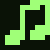
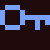
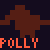
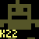
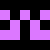
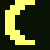
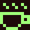
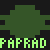

last
dnes, pondelok 12. októbra
-
Idem. Vezmem aj dvoch ľudí z Trnavy, mám miesto v aute, odchod 18:30 od stanice.
-
Re[3]: kde kúpiť dobrý chlieb v BA
Na Obchodnej, pekáreň v dvore za kníhkupectvom. Kváskový ražný, v sobotu do desiatej vypredané.
33 K -
nabíjanie na sídlisku
Má niekto skúsenosť s nabíjaním z verejnej nabíjačky na sídlisku bez vlastnej garáže? Koľko to reálne vychádza na mesiac?
3 K -
Re[12]: rozpočet na budúci rok
Kto čakal, že sa bude škrtať na kultúre a nie na tendroch, ten tu asi nežije dlho.
9 K -
bookmarks sa nenačítajú po polnoci
Od včera po polnoci mi bookmarks visia aj minútu. Ráno je to v poriadku. Má to ešte niekto?
14 K -

čo počúvate dnesCelý deň Boards of Canada, lebo prší a inak to nejde.
11 K -
električka do Petržalky: prvý mesiac
Mesiac po spustení: ráno je plná, večer poloprázdna, a nikto nevie, prečo nejazdí po desiatej.
27 K -

Atkinson Hyperlegible: písmo pre všetkých?Font, ktorý vznikol pre slabozrakých, a zrazu ho chce každý. Je to dobré písmo, alebo len dobrý príbeh?
18 K -
Prečo sa mestské stromy oplatia viac ako klimatizácia
Prehľad troch štúdií z Viedne a Barcelony: koľko stupňov ušetrí jeden vzrastlý javor, koľko stojí jeho údržba, a prečo to radnice aj tak počítajú zle.
64 K -
hmla nad Dunajom
Šiesta ráno z Apollo mosta. Dvadsať minút čakania, jedna fotka.
28 K
včera, nedeľa 11. októbra
-
Re: Čo čítame v októbriode :: 23:10
Tokarczuk, Pravek a iné časy. Pomalé ako rieka, a presne preto to funguje.
5 K -

Re[2]: Lipsko na víkendV Lipsku je pivo stále lacnejšie ako v Starom Meste. Toľko k teórii.
6 K -
Kyberia session 2026: zostava, miesto, lístky
Sobota 8. novembra, Bratislava. Štyri live sety, jeden DJ, a tentokrát aj šatňa.
51 K -

X230 v roku 2026Nová batéria, SSD, coreboot. Je to stále najlepší notebook, ktorý som kedy mal, a vážim si to viac než by som mal.
15 K -
prečo mačky padajú na nohy, ale chlieb na maslo
Vážne pýtam. Má to niečo spoločné s momentom zotrvačnosti alebo len s mojou smolou?
22 K -
Re[8]: nové lávky cez Dunaj
Lávka je pekná, ale kto ju navrhol bez strechy, nikdy nešiel cez ňu v novembri.
4 K -
„za účelom“ musí zomrieť
Zbierka najhorších úradných fráz za tento týždeň. Prispievajte, ale bez mien.
31 K -
Portra 400 zdražela znova
Rolka za 19 eur. Prechádzam na čiernobielu a vyvolávam doma, inak to nejde.
8 K
sobota 10. októbra
-
Čo čítame v októbri
Mesačné vlákno. Jedna kniha, dve vety prečo, žiadne spoilery bez varovania.
22 K
piatok 9. októbra
-

najlepší langoš na SlovenskuHlasujte, ale Zlaté piesky sa nerátajú, tam sme boli všetci a všetci vieme.
12 K -
Self-hosting v roku 2026: čo nám beží doma
Zdieľajte setup: hardvér, čo na ňom beží, koľko to žerie, a jedna vec, ktorú by ste dnes urobili inak.
19 K
štvrtok 8. októbra
-

predám: Nikon FM2, čiernyPlne funkčný, nové tesnenia. Osobne v BA, cena dohodou, nie výmena za drony.
2 K -
silence: Re[18] Kyberia session 2026
Dvaja užívatelia, 24 h, dôvod: osobné útoky od úrovne 9. Bez ďalších opatrení.
23 K
streda 7. októbra
-
otvorené slúchadlá do 200 eur
Hľadám niečo na večerné počúvanie, nie do MHD. Sennheiser alebo niečo nové?
7 K
utorok 6. októbra
-

november: Wittgenstein, TractatusČítame po kapitolách, stretnutie každý štvrtok online. Kto ide, napíšte pod to.
17 K
03.10.2026
-
Záhrada na balkóne: zelená stena za 40 eur
Paleta, geotextília, kvapková závlaha z PET fliaš. Zelená stena prežila leto aj dovolenku.
40 K
29.09.2026
-
Prečo je kyberia zelená?
Fosforové monitory, terminály, Matrix, alebo len náhoda? Zbieram teórie.
58 K
28.09.2026
-

sezóna 2026/27: kde bude snehPredpovede hovoria o slabom začiatku. Kto pôjde do Álp hneď v decembri?
6 K